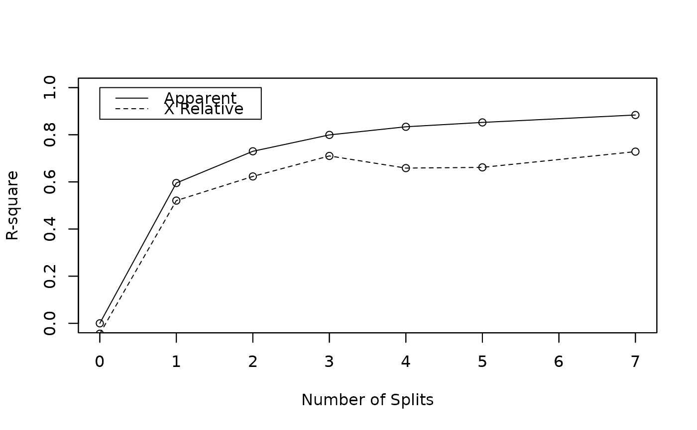
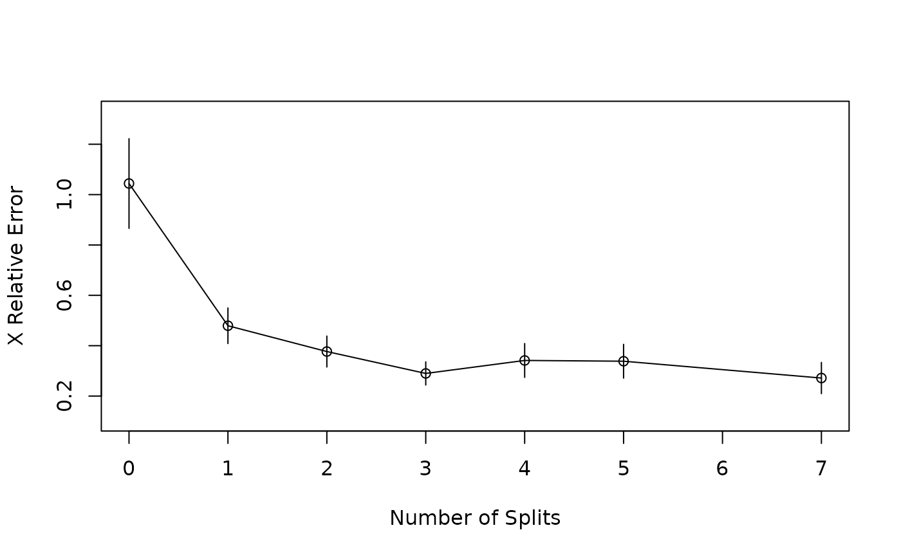

Plots the Approximate R-Square for the Different Splits
rsq.rpart.RdProduces 2 plots. The first plots the r-square (apparent and apparent - from cross-validation) versus the number of splits. The second plots the Relative Error(cross-validation) +/- 1-SE from cross-validation versus the number of splits.
Examples
data(car.test.frame)
z.auto <- rpart(Mileage ~ Weight, car.test.frame)
rsq.rpart(z.auto)
#>
#> Regression tree:
#> rpart(formula = Mileage ~ Weight, data = car.test.frame)
#>
#> Variables actually used in tree construction:
#> [1] Weight
#>
#> Root node error: 1354.6/60 = 22.576
#>
#> n= 60
#>
#> CP nsplit rel error xerror xstd
#> 1 0.595349 0 1.00000 1.04411 0.178078
#> 2 0.134528 1 0.40465 0.47927 0.070607
#> 3 0.069427 2 0.27012 0.37681 0.061414
#> 4 0.034492 3 0.20070 0.28985 0.046051
#> 5 0.018491 4 0.16620 0.34143 0.067161
#> 6 0.015719 5 0.14771 0.33838 0.067030
#> 7 0.010000 7 0.11627 0.27161 0.061983

